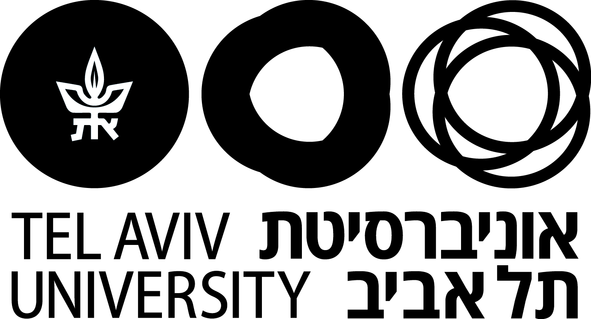

ברוכים הבאים!
נבדק/ת יקר/ה שלום,
אני מודה לך על נכונותך והיענותך להשתתף במחקר.
שמי אביב ואני סטודנט לתואר שני בחוג לבלשנות באוניברסיטת תל אביב.
מחקר זה הוא חלק מסדרת מחקרים בתחום של עיבוד משפטים, מטרתו של המחקר היא לבחון את האופן שבו אנשים מבנים ומעבדים שפה.
מידע על הניסוי :
- במחקר שלפניך יוצגו לך מספר משפטים, עבור כל משפט תידרש/י לקבוע האם המשפט שלפניך הוא טוב או לא. אציין כי אין תשובה נכונה או לא נכונה.
- הנך מתבקש/ת לקרוא בעיון את ההוראות והנחיות בכל שלב בניסוי ולענות על השאלות בהתאם. כל משפט מוגבל בזמן. המחקר הינו בעילום שם והנתונים שיתקבלו מהמחקר הם לצורכי מחקר זה בלבד, ולא יעשה בהם שימוש נוסף והנתונים לא ימסרו לכל גורם שלישי.
- לשאלות המופיעות אין תשובות נכונות או לא נכונות. תשובה נכונה היא זו המשקפת את דעתך האישית בלבד. אנו מבקשים שתשתדל/י לענות על כל השאלות בצורה כנה עד כמה שניתן, על פי הסדר המופיע בניסוי מבלי לדלג על אף שלב.
- השתתפותך במחקר הינה מתוך רצונך החופשי. במידה ותחוש/י שלא בנוח, זכותך להפסיק את השתתפותך בכל שלב במהלך הניסוי.
- משך זמן הניסוי הינו מפגש אחד העשוי להיערך כ- 30 דקות.
- המחקר יבוצע באופן מקוון דרך האינטרנט באמצעות פלטפורמה של PCibex.
- אנא וודא כי הנך מצוי בחלל שקט וכי יש ברשותך את הזמן הדרוש לביצוע הניסוי.
- עם סיום מילוי הניסוי, התשובות ישלחו אל צוות המחקר באופן אנונימי והפרטים עליהם/ן תענו יישארו חסויים בידי צוות המחקר ולא יעשה בהם כל שימוש למעט לצורך מחקר זה.
- ניתן לפנות במייל שכתובתו- avivazar@mail.tau.ac.il לשאלות הקשורות ברציונל הניסוי ואופי המחקר.
אני מודה לך מראש על שיתוף הפעולה!
בתודה מראש,
אזר אביב